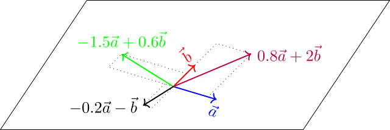
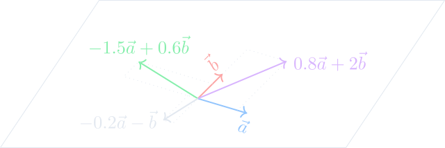
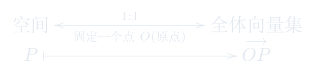

1.2 向量线性相关性
从线性组合与张成空间出发，理解向量组中方向是否冗余。
进度0%
掌握 0 / 4§1.2.1
线性组合
向量 / 向量线性相关性
也就是说,一组向量的线性组合就是从这组向量出发通过线性运算能够获得的向量.


这页感觉如何？
§1.2.2
线性组合的几何意义
向量 / 向量线性相关性

-
设 \(\vec{a}\)为一个非零向量。则过原点与 \(\vec{a}\) 平行的直线 \(\overset{\quad 1:1 \quad}{\leftrightarrow}\) \(\vec{a}\)的全体线性组合.
-
设\(\vec{a},\vec{b}\)不平行(不共线). 则过原点与 \(\vec{a}\) 和 \(\vec{b}\) 平行的平面 \(\overset{\quad 1:1 \quad}{\leftrightarrow}\) \(\vec{a},\vec{b}\) 的全体线性组合.
这就是线性组合的威力:用少数几个向量表示特定子空间!
这页感觉如何？
§1.2.3
线性相关与线性无关
向量 / 向量线性相关性
特别地，设 \(\vec{a}_1\), \(\vec{a}_2\), \(\cdots\), \(\vec{a}_m\)线性无关. 若 \(\lambda_1\vec{a}_1 + \lambda_2\vec{a}_2 + \cdots + \lambda_m\vec{a}_m= \vec{0}\), 则
\(\lambda_1=\lambda_2= \cdots=\lambda_m=0\).
\(3\vec{e}_1 - \vec{e}_2 - 2\vec{e}_3 =\vec{0}\) 或 \(\vec{e}_2 = 3\vec{e}_1-2\vec{e}_3\).
这页感觉如何？
§1.2.4
线性相关性的几何判断
向量 / 向量线性相关性
-
一个向量\(\vec{a}\)线性相关 \(\iff\) \(\vec{a}=\vec0\);
-
两个向量\(\vec{a},\vec{b}\)线性相关 \(\iff\) \(\vec{a}\)与\(\vec{b}\)平行(共线);
-
三个向量\(\vec{a},\vec{b},\vec{c}\)线性相关 \(\iff\) \(\vec{a},\vec{b},\vec{c}\)共面;
-
四个及四个以上的向量一定线性相关.
这页感觉如何？